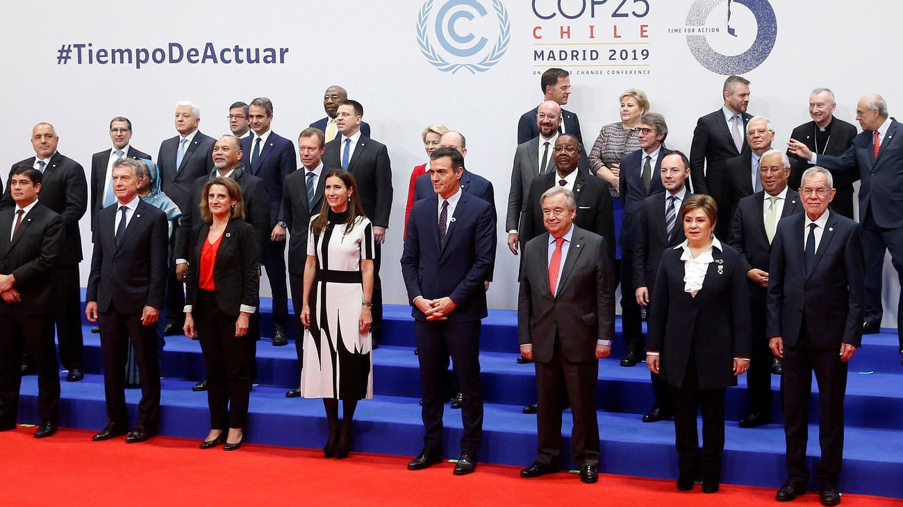

Con un día de retraso y negociaciones hasta última hora, la cumbre de Glasgow culminó el pasado viernes con dos claros compromisos: «Tenemos que vernos más a menudo» y «Esto hay que repetirlo». El recién nacido Pacto del Clima de Glasgow reclama a los países que «no dejen pasar tanto tiempo», pues «aunque dé pereza organizarlo, luego merece la pena». El vicepresidente de la Comisión y jefe de los negociadores europeos, Frans Timmermans, resumía así las conclusiones del encuentro: «Ha estado bien». Aseguró que «se ha hablado de todo un poco, muchos se han puesto cara, que ya era hora, y al final se ha apuntado bastante gente».
